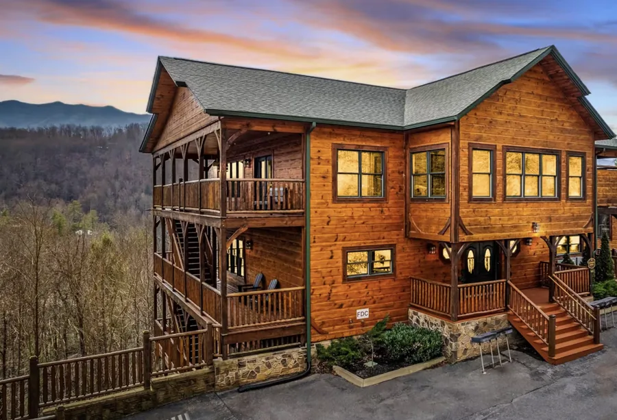

Booking open
13–18 April 2027 · Gatlinburg, Tennessee
Wide Open: The Gatlinburg Edition
Five days in a private house at the edge of the Smoky Mountains, with Kayla Freeman leading the morning movement. Lodging, every meal, two workshops and two outings are included.
A shared room is $1,490 and the private king suite is $2,790 at the early rate. $500 holds your room.
See Gatlinburg and book
The early rate holds through 31 October. Prices rise on 1 November.